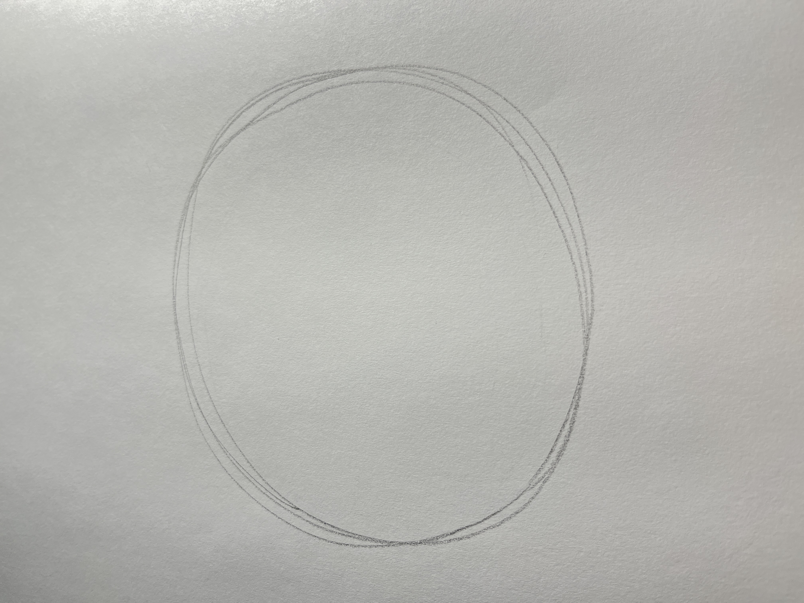
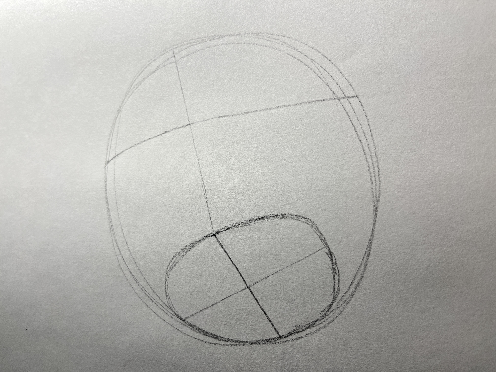
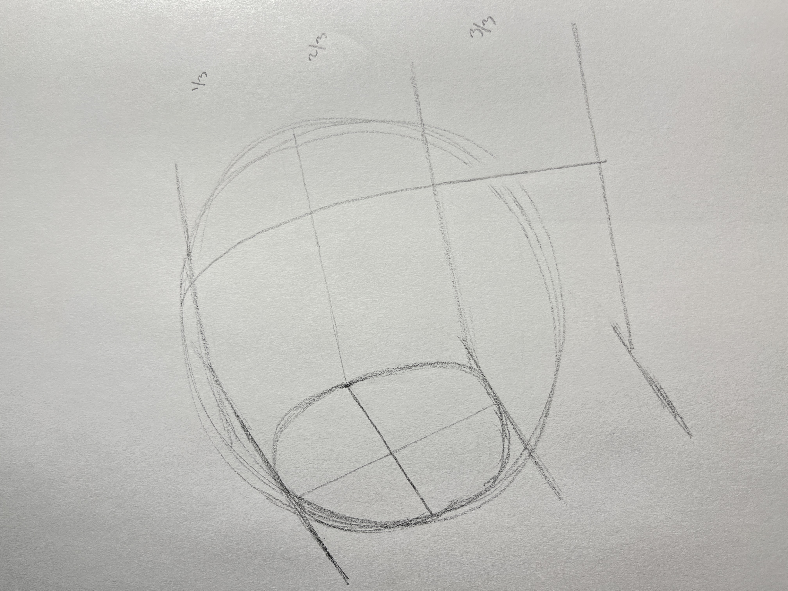
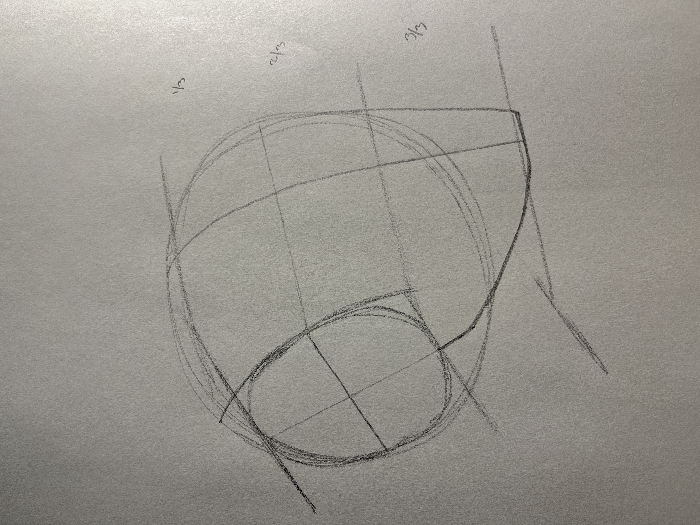
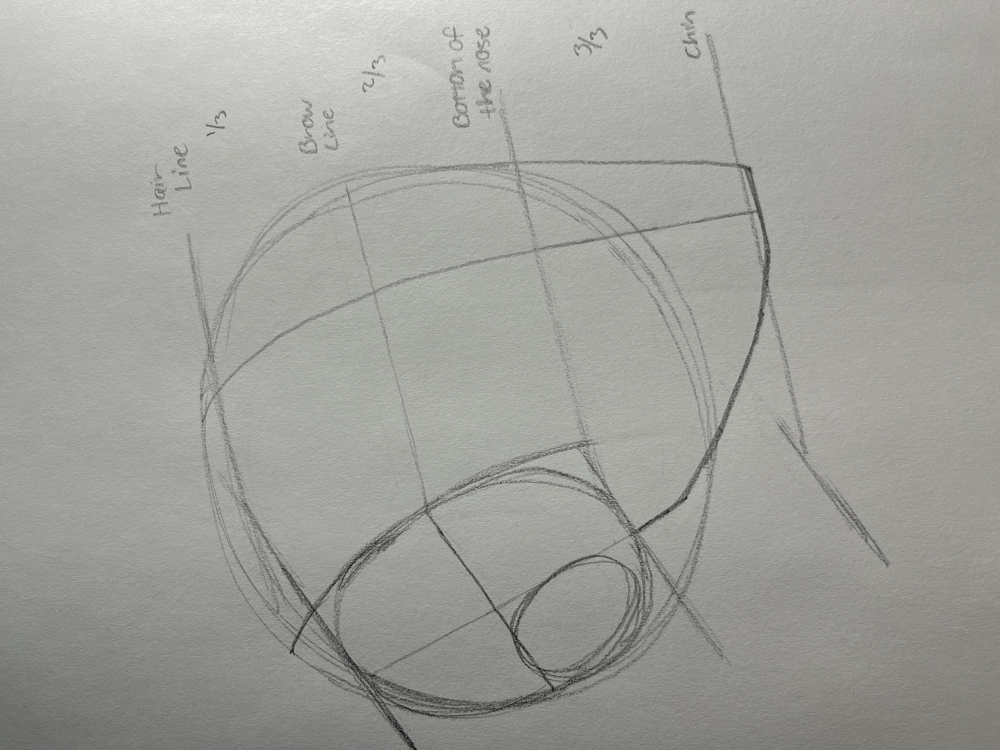
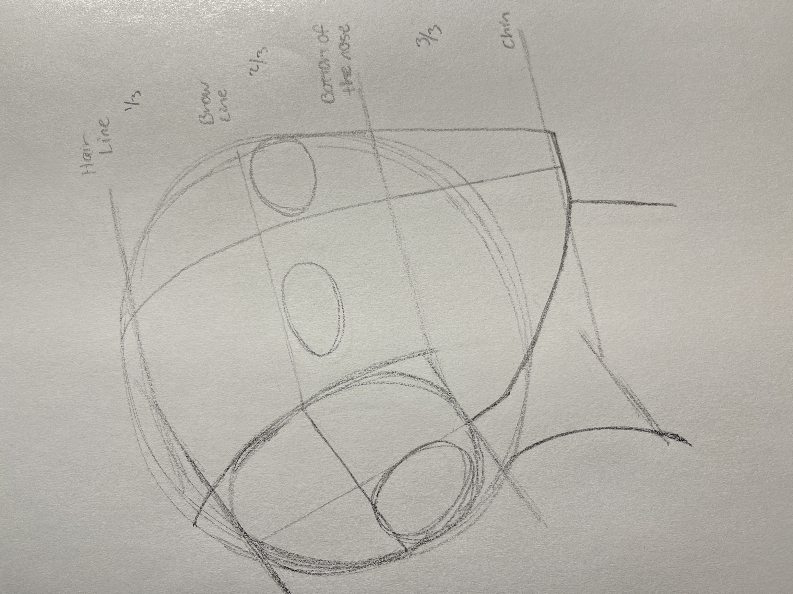
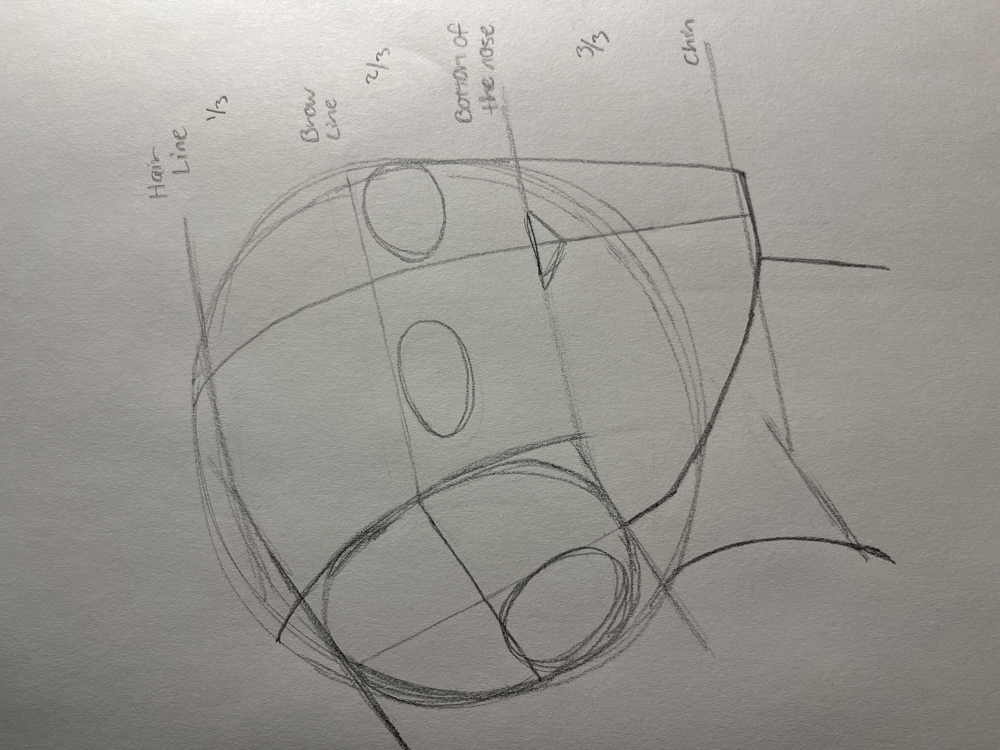
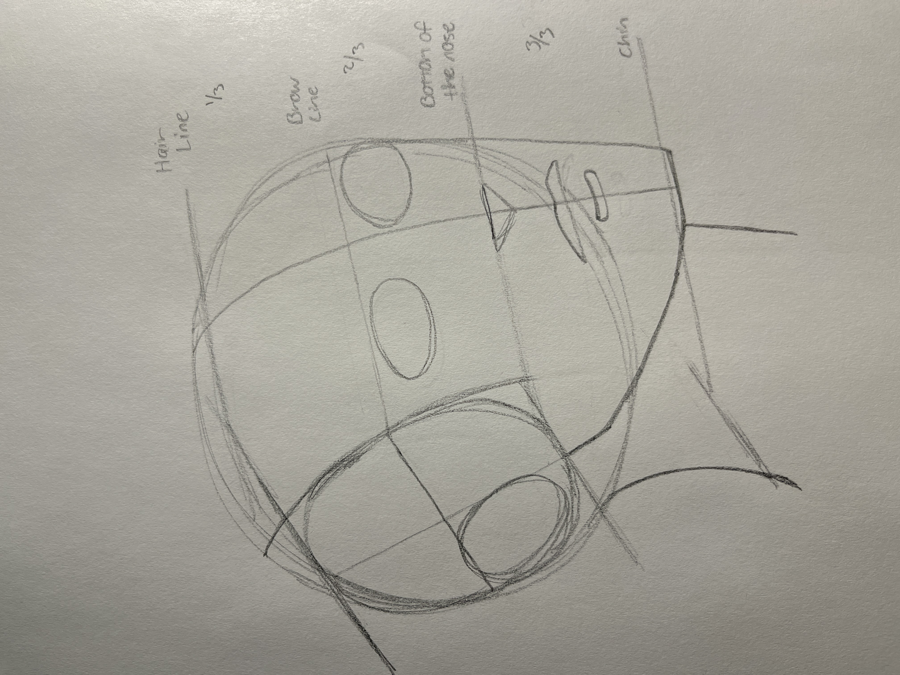
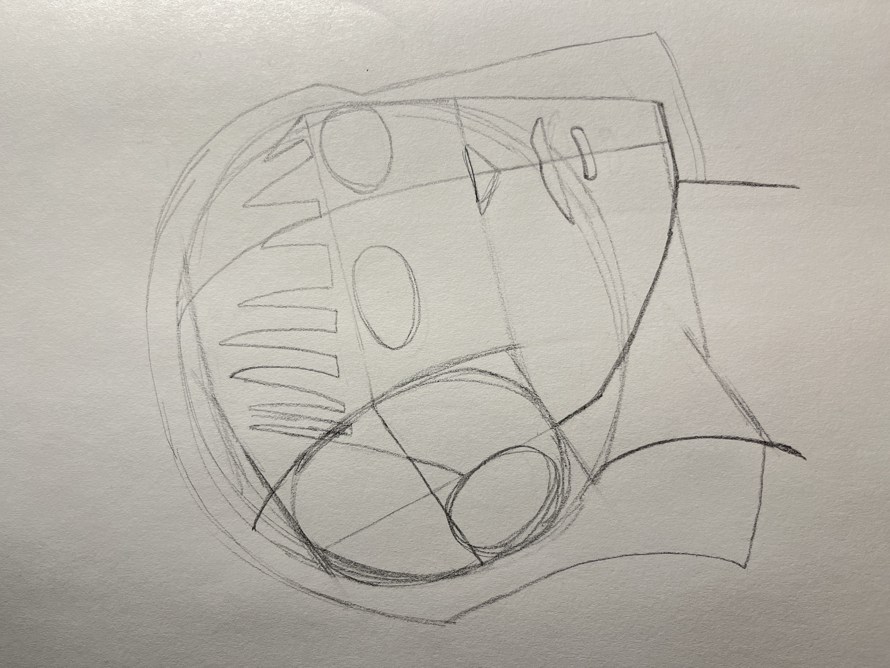
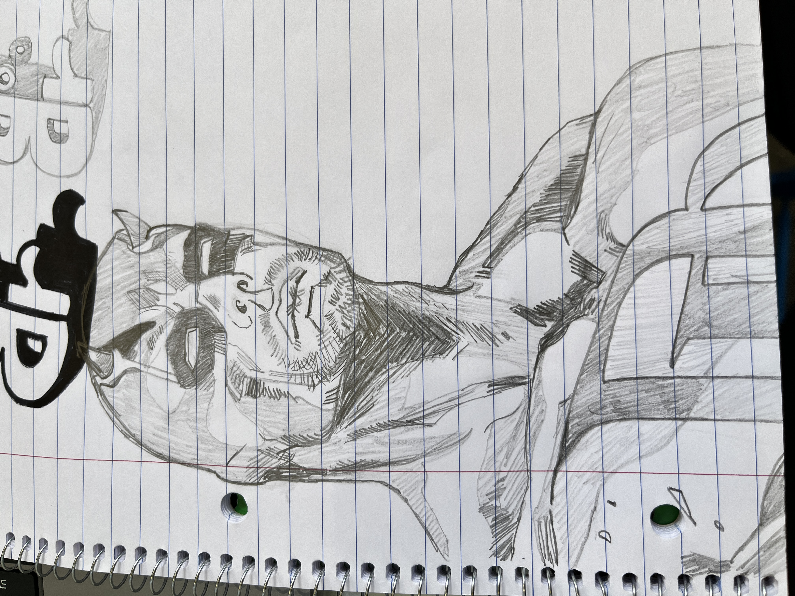

Before you can begin drawing faces, we first need to learn how to draw heads!!
Step 1: Circle
Draw a circle. Doesn't have to be perfect.
HOW TO DRAW A

Before you can begin drawing faces, we first need to learn how to draw heads!!
Draw a circle. Doesn't have to be perfect.


Define a center line both horizontally & vertically across the circle. This helps us define the side plane of the head with an oval.
Reference the top of the oval and draw lines horizontally across the form to establish the three 1/3's of the face.


Draw a line from the center point of the oval to establish the first angle of the jawline. Then bring that line to the lower 1/3 with another angle. Follow this around to the side of the face.
Now add an oval to the back lower quarter of the side plane of the head. This is where the ear will go.

Now it's time to add the humanness to our heads!!
Use circles for where you want the eyes to be.


Draw an upside down triangle for the bottom of the nose.
Add a small "M" like shape for the upper lip, and a small "U" like shape for the bottom of the lip.


Hair can be tricky. I like to focus on the overall shape of the hair or how it flows.
Having these basic shapes for reference will allow us to draw a character of our choice.


For more resources on how to draw heads and faces, check out the "RESOURCES" page!